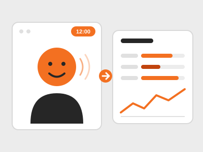

← Zurück zu Projekten

KI-Avatar für therapeutische Erstgespräche
Ein KI-Avatar führt das therapeutische Erstgespräch und prüft, wie es um das Wohlbefinden des Patienten steht.
Für das Zentrum Moyland und einen Therapeuten entwickeln wir einen KI-Avatar, der das therapeutische Erstgespräch führt. Im Gespräch werden verschiedene Profilbereiche angesprochen, unter anderem Stress und Schlaf, aber auch weitere Bereiche, um das Wohlbefinden des Patienten einzuschätzen.
Das Gespräch dauert 12 Minuten. Danach wird in einem Dashboard eine Analyse erstellt: Die Aussagen aus dem gesamten Gespräch werden zusammengefasst und visuell sowie grafisch dargestellt. Dazu kommt eine Auswertung des Verhaltens des Patienten über die Kamera.
Auf einen Blick
- Auftraggeber: Zentrum Moyland und ein Therapeut
- Dauer des Gesprächs: 12 Minuten
- Profilbereiche: unter anderem Stress und Schlaf sowie weitere
- Ergebnis: Dashboard mit Zusammenfassung, Grafiken und Verhaltensauswertung per Kamera